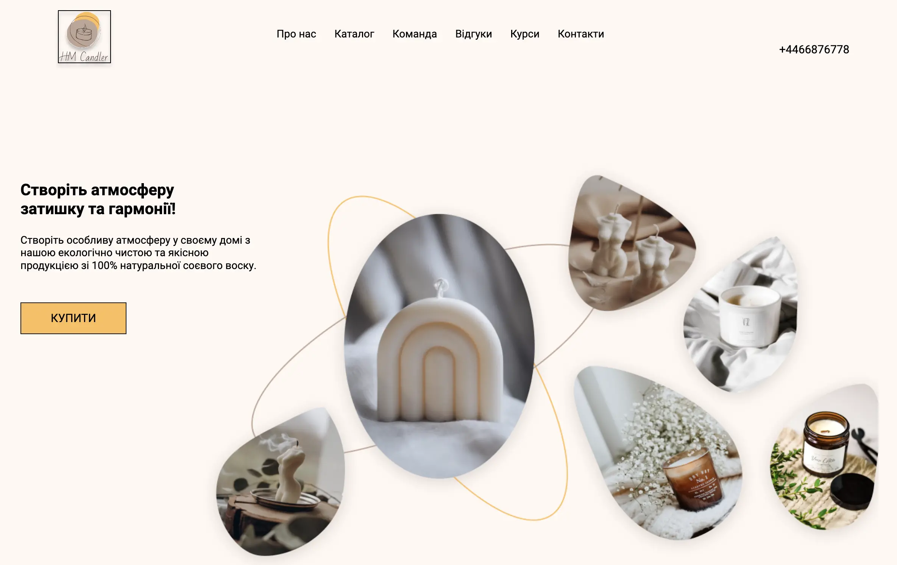

My projects
-
Design
This project presents a website with a modern interior design. It highlights the variety of services offered, including uniqu and functional space designs tailored to the individual needs of the client.
moreTechnologies Used:
HTML - Structure and content of the web pages.
SCSS - Styling, layout, and responsive design.
JavaScript - Interactive features and dynamic content.
Gulp - It helped me effectively manage and automate routine activities such as compiling CSS from preprocessors, minifying and combining JavaScript files, optimizing images and live browser synchronization (live reloading).
GitHub Pages - I used GitHub Pages to host the website, which allowed me to easily and free share the project online. -
A cup of tea
This project is a comprehensive tea store website showcasing a wide selection of high-quality teas from around the world. It features collections of various tea types, client testimonials, a tea blog, and detailed information about the store's values and services.
moreTechnologies Used:
HTML - Structure and content of the web pages.
CSS - Styling, layout, and responsive design.
JavaScript - Interactive features and dynamic content.
GitHub Pages - I used GitHub Pages to host the website, which allowed me to easily and free share the project online -
Lease Car
This project is a car leasing website that provides comprehensive information about leasing vehicles. It includes details on the leasing process, advantages, and considerations, along with options to browse new and pre-owned cars.
moreHTML - Structure and content of the web pages.
CSS - Styling, layout, and responsive design.
JavaScript - Interactive features and dynamic content.
GitHub Pages - I used GitHub Pages to host the website, which allowed me to easily and free share the project online. -
Bank
This project is a website for a credit card debt payoff app designed to help users manage and eliminate their credit card debt efficiently. It offers features such as debt consolidation, automated payments, and personalized financial plans.
moreHTML - Structure and content of the web pages.
SCSS - Styling, layout, and responsive design.
JavaScript - Interactive features and dynamic content.
Gulp - It helped me effectively manage and automate routine activities such as compiling CSS from preprocessors, minifying and combining JavaScript files, optimizing images and live browser synchronization (live reloading).
GitHub Pages - I used GitHub Pages to host the website, which allowed me to easily and free share the project online. -

Candle
The Candle website was designed to provide users with an intuitive and visually appealing interface that allows easy access to key information and features. The website was designed and built using modern web technologies, including HTML, CSS and JavaScript, which allowed for a responsive and aesthetic appearance and dynamic functionality.
moreSeveral methods and technologies were likely used:
HTML5 - The site structure is designed in HTML5, providing a semantic and structured content structure.
CSS3 - I used CSS3 to style the website, which allowed me to create an attractive and modern design. Media queries were
also used to ensure website responsiveness on various devices.
JavaScript - The interactivity of the website was implemented using JavaScript, enabling dynamic changes and reactions to user actions.
GitHub Pages - I used GitHub Pages to host the website, which allowed me to easily and free share the project online.